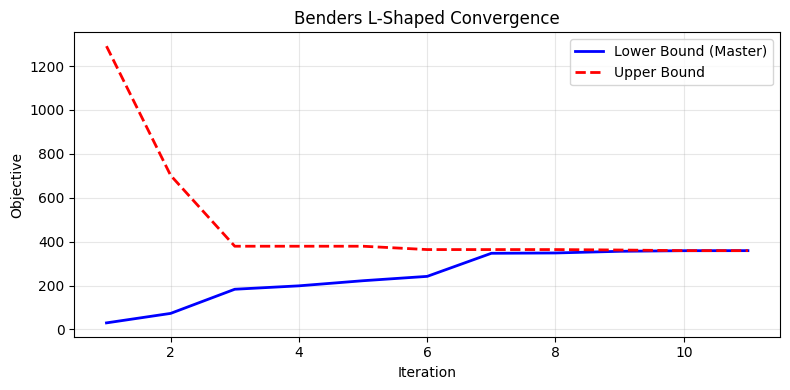
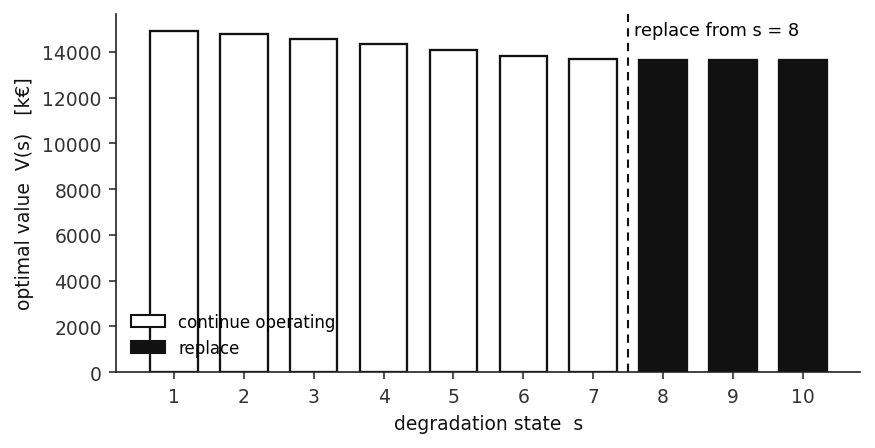
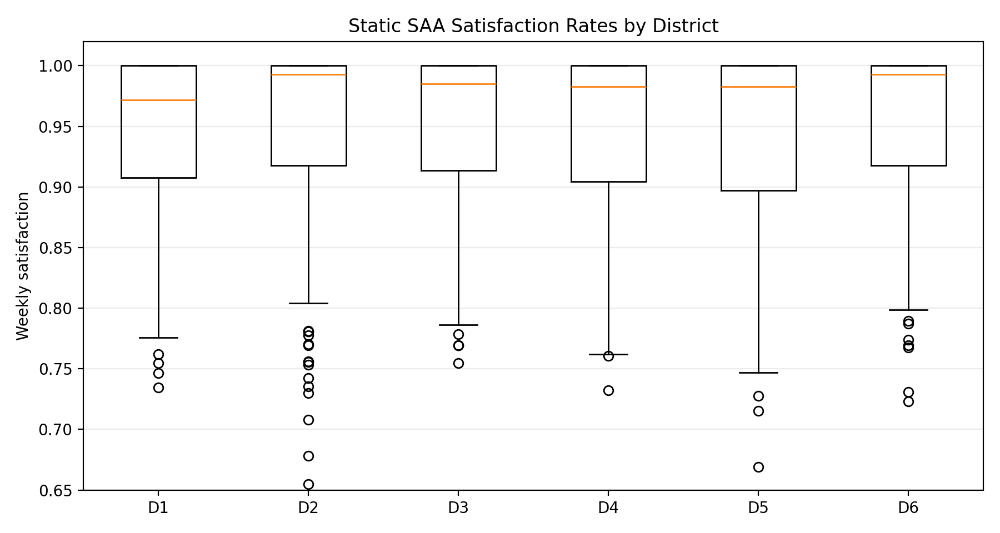
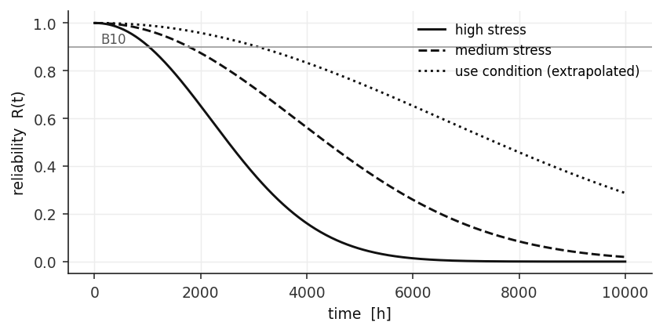

Operations research · Stochastic optimisation · Industrial engineering
Adnan Khan
I build mathematical models that help organisations decide things. Which vehicle takes which route. How much capacity to install before anyone knows what demand will be. When to replace a machine that is quietly getting worse.
I am finishing a master’s in Operations Research and Risk Analytics at CentraleSupélec, Université Paris-Saclay, and I do research at the Paris Brain Institute. I came to optimisation from the factory floor. During my industrial engineering degree in Dhaka I timed production lines and traced defects back to their causes, and learned that most operational problems are about the decisions made around the machines.
Selected work
All work →
Resilient omnichannel distribution under disruption
A two-stage stochastic MILP with CVaR that assigns every order a primary and a backup node before disruptions, with exact vehicle routing. Backups cut expected cost by 32.1 percent, and the result holds on 300 new scenarios.

Attentional states from eye-tracking and typing
A multimodal pipeline and Gaussian hidden Markov models on data from 32 participants at the Paris Brain Institute.

Power generation capacity planning
Choosing generation capacity before demand is known, first to minimise expected cost, then to protect against the bad tail.

Machine replacement policy
When should a degrading machine be replaced? An infinite-horizon Markov decision process gives a simple control-limit rule.

Food bank inventory
Ordering food a week ahead for six districts under uncertain demand, held to a fairness rule between them.
Offshore wind maintenance
Scheduling preventive and corrective maintenance where vessels and crews are as constrained as the turbines, and explaining why the optimum was to do nothing.

Life testing and warranty pricing
Predicting product lifetime from accelerated stress tests, then using that prediction to price a warranty.
Four more pieces of work
Survival analysis of repair data, energy efficiency prediction, a risk analytics project and panel quantile regression on remittances.
Experience
Details →Research Intern, Paris Brain Institute (ICM)
Hidden Markov models of attentional states from eye-tracking and typing data.
Industrial Engineering Intern, Akij Food and Beverage (AFBL)
Time studies, bottleneck analysis, line balancing and a redesigned production layout.
Production Engineering Intern, Kabir Steel Re-Rolling Mills (KSRM)
Pareto and root cause analysis on re-rolling defects. The defect rate fell 11 percent over the tracked period.
Education
Details →MSc Operations Research and Risk Analytics (M2), CentraleSupélec
Université Paris-Saclay. Stochastic optimisation, complex decisions, decision making, data analytics and machine learning. Institutional scholarship.
BSc Industrial and Production Engineering, NITER
University of Dhaka. 87th percentile of the department, merit-based scholarship.
Toolkit
Full profile →Optimisation
Data and statistics
Tools
Get in touch
I am based in Paris and available from October 2026. The quickest way to reach me is by email.
- mdadnankhan2022@gmail.com
- Phone
- +33 7 58 45 45 51
- in/adnankhan121
- GitHub
- Adnan-Khan-OR
- CV
- Download (PDF)